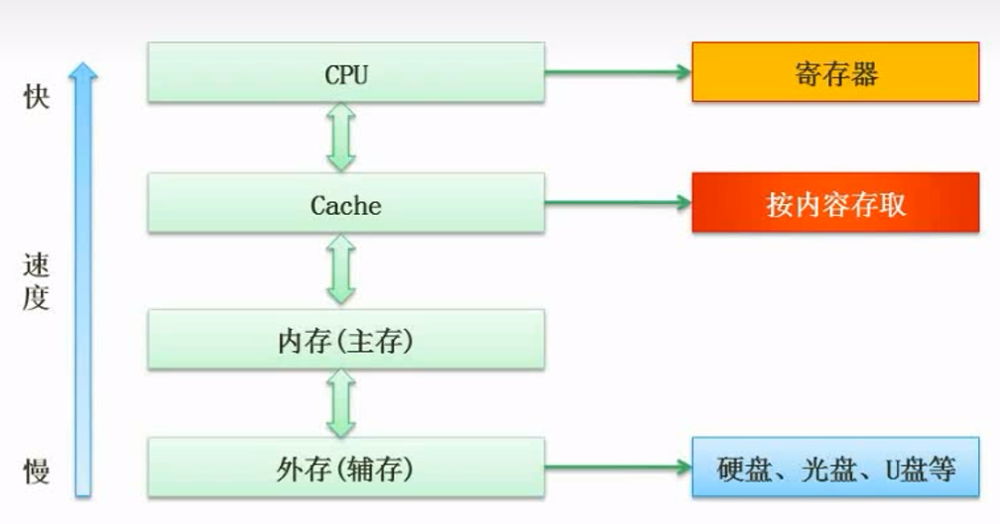
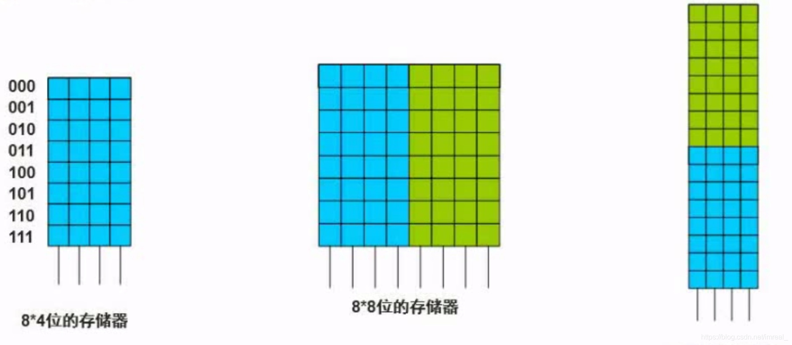
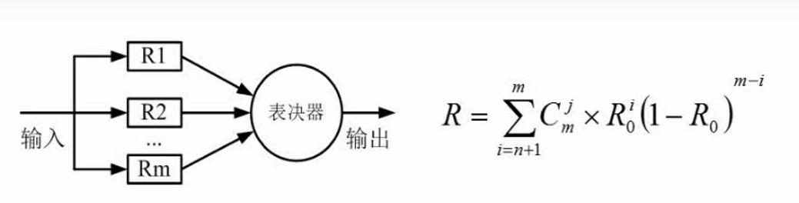
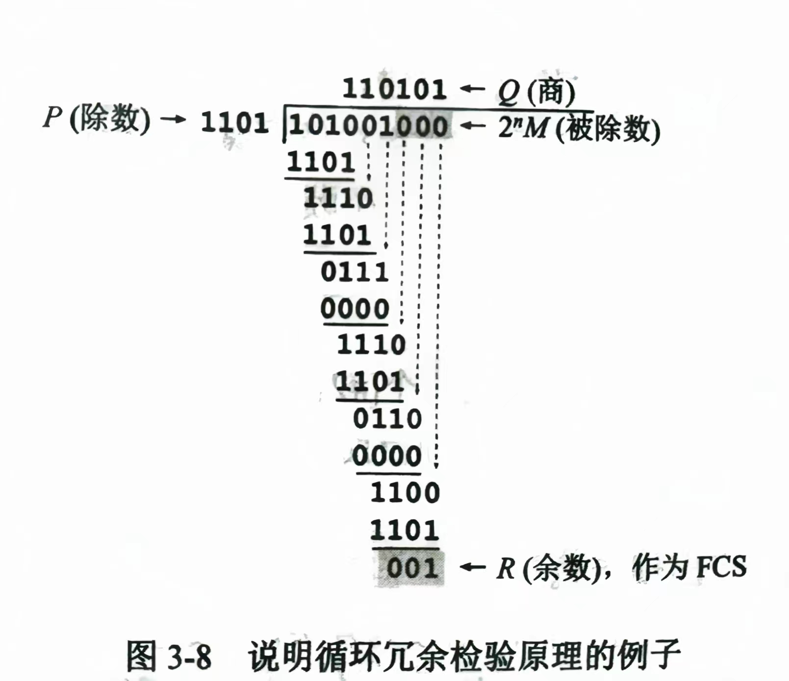

「软件设计师」计算机组成与体系结构
数据的表示
- 最小的数据单位：b
- 最小的存储单位：byte
进制的转换
- R进制转十进制:将每一位数字用表示然后相加，k与该位与小数点的距离有关，小数点左边第一位为0，右边第一位为-1，往左递增，往右递减如：二进制数
- 十进制转R进制: 整数位使用短除法，即将十进制数除以R再取余，直至余数为零，然后将余数由下往上按顺序排列，小数位乘以R，每乘一次就取它的整数位（整数位为零时就取零)，直至小数位为零，然后将取得的整数位由上往下排列即可。
- 二进制转八进制及二进制转十六进制：将二进制数以小数点为界向左及向右每三个一组(转八进制),或者每四个一组(转十六进制)，缺的数用零来补充，然后依次转化为相应的进制数然后按顺序排列即可。
原码反码补码移码
- 原码：将数值转换为二进制数，并且该二进制数的首位（最高位）表示正负，0表示正，1表示负，不足八位的就在首位与二进制数中间用零填充。例：
- 反码：正数的反码为本身，负数的反码为其原码除首位不变外全部取反
- 原码在计算机中进行加减不能得到正确的答案，而反码的加减则符合事实
- 补码：正数的补码与原码和反码相同，负数的补码即为其反码加1
- 补码的运算也符合正确答案
- 补码的补码就是原码
- 移码：将正数和负数的补码首位取反，其余位不改变
- 移码的运算也符合正确答案
- 各自数值表示范围:其中n一般等于8
| 整数 | |
|---|---|
| 原码 | |
| 反码 | |
| 补码 |
浮点数
- 浮点数的概念：浮点数即科学计数法，如 ; 其中，1为尾数，10为基数，3为指数
- 表示格式：阶符+阶码+数符+尾数
- 计算机中浮点数的运算：当两个指数不等的浮点数相加时，计算机会把低阶浮点数的指数转化为高阶浮点数的指数，如： ，计算机会将 转化为 ，然后作和，然后结果规格化(将尾数的绝对值限定在区间[0.5,1])，如：得到 以后，要化为
- 浮点数所能表示的数值范围主要由阶码决定，所表示的数值精度则由尾数决定
中央处理器（CPU）
CPU由运算器和控制器组成
- 运算器(ALU）
- 累加寄存器(AC):专门存放算术或逻辑运算的一个操作数和运算结果的寄存器。能进行加、减、读出、移位、求补等操作。是运算器的主要部分
- 状态寄存器(PSW）：该部件用来存放两类信息，一类是体现当前指令执行结果的各种状态信息(条件码)，如有无进位、有无溢出、结果正负、信息是否为零等；另一类是存放控制信息，如允许中断、跟踪标志等
- 控制器
- 程序计数器(PC)：程序计数器中存放的是下一条指令的地址。由于多数情况下程序是顺序执行的，所以程序计数器设计成自动加一的装置。当出现转移指令时，就需重填程序计数器
- 指令寄存器(IR)：中央处理器正在执行的操作码表存放在这里，即当前正在执行的所有指令
- 指令译码器（ID）：将操作码解码，告诉中央处理器该做什么
- 时序部件
寻址
- 立即寻址。操作数就包含在指令中
- 直接寻址。操作数存放在内存单元中，指令中直接给出操作数所在存储单元的地址
- 寄存器寻址。操作数存放在某一寄存器中，指令中给出存放操作数的寄存器名。寄存器间接寻址。操作数存放在内存单元中，操作数所在存储单元的地址在某个寄存器中
- 间接寻址。指令中给出操作数地址的地址
- 相对寻址。指令地址码给出的是一个偏移量(可正可负)，操作数地址等于本条指令的地址加上该偏移量
- 变址寻址。操作数地址等于变址寄存器的内容加偏移量。
- CPU采用多种寻址方式是为了在效率和方便性上找一个平衡
- CPU根据指令周期的不同阶段来区分内存中以二进制编码形式存放的指令和数据
- 指令最先进入到数据寄存器暂存起来，然后再拿到指令寄存器中，再交由指令译码器来解码进而运算(交给运算器)，而这一过程一结束，就会迅速提取程序计数器中的指令(即下一条指令)，因此，程序计数器中存储的始终是暂未执行的，下一条指令的“地址”
- 在汇编语言程序中，程序员可以直接访问通用寄存器以存取数据，可以访问状态字寄存器以获取有关数据处理结果的相关信息，可以通过相对程序计数器进行寻址，但是不能访问指令寄存器，即指令寄存器对用户是完全透明的
计算机体系结构分类(Flynn)
| 体系结构类型 | 结构 | 关键特性 | 代表 |
|---|---|---|---|
| 单指令流单数据流SISD | 控制部分：一个 处理器：一个 主存模块：一个 |
单处理器系统 | |
| 单指令流多数据流SIMD | 控制部分：一个 处理器：多个 主存模块：一个 |
各处理器以异步的形式执行同一条指令 | 并行处理机 阵列处理机 超级向量处理机 |
| 多指令流单数据流MISD | 控制部分：多个 处理器：一个 主存模块：多个 |
被证不可能，至少是不实际 | 目前没有，有文献称流水线计算机为此类 |
| 多指令流多数据流MIMD | 控制部分：多个 处理器：多个 主存模块：多个 |
能够实现作业、任务、指令等各级全面并行 | 多处理机系统 多计算机 |
CISC和RISC
| 指令系统类型 | 指令 | 寻址方式 | 实现方式 | 其他 |
|---|---|---|---|---|
| CISC（复杂） | 数量多，使用频率差别大，可变长格式 | 支持多种 | 微程序控制技术（微码） | 研制周期长 |
| RISC（精简） | 数量少，使用频率接近，定长格式，大部分为单调期指令，操作寄存器，只有Load/Store操作内存 | 支持方式少 | 增加了通用寄存器；硬布线逻辑控制为主；适合采用流水线 | 优化编译，有效支持高级语言 |
流水线
- 基本概念：流水线是指在程序执行时多条指令重叠进行操作的一种准并行处理实现技术。各种部件同时处理是针对不同指令而言的，它们可同时为多条指令的不同部分进行工作，以提高各部件的利用率和指令的平均执行速度
- 周期计算
- 流水线周期（操作周期）为执行时间最长的一段
- 计算公式：1条指令执行时间+(指令条数-1)*流水线周期
- 理论公式：(t1+t2+
··+tk)+(n-1)*△t - 实践公式：(k+n-1)*△t
- 理论公式：(t1+t2+
优先使用理论公式
- 吞吐率计算
- 定义：指单位时间内流水线所完成的任务数量或输出的结果数量
- 基本公式：
- 流水线最大吞吐率：
- 加速比
- 定义：完成同样一批任务，不使用流水线所用的时间与使用流水线所用的时间之比
- 公式：
- 效率
- 定义：流水线的设备利用率。在时空图上，流水线的效率定义为n个任务占用的时空区与k个流水段总的时空区之比
- 公式：
层次化存储器结构

内存存储外存的部分内容，cache存储内存的部分内容，CPU只处理cache中的指令，cache的作用是精简内存中重复出现的指令，提高CPU的执行效率，使得计算机的运算速度得到极大的提升；此外，结构中由上至下，速度越来越慢，但容量越来越大
Cache
- Cache的功能：提高CPU输入输出的速率，突破冯诺依曼瓶颈，即CPU与存储器系统间数据传送带宽限制，在程序执行过程中，Cache与主存的地址映射是由硬件自动完成的
- 与cache相关的计算：如果以h代表Cache的访问命中率，表示Cache的周期时间，表示主存储器周期时间，以读操作为例，使用“Cache+主存储器”的系统的平均周期为，则
1-h称为失效率（未命中率）
CPU会在cache中寻找它需要的数据，如果不能找到，CPU就将前往内存中寻找，而chche的访问命中率就是CPU需要的数据在cache中被找到的比例，未能找到的数据CPU将前往内存中进行再次寻找
- 内存与cache地址映射的三种方式
- 直接映像：cache的区号与内存的区号一一对应
- 全相连映像：cache的一个块号可以对应多个内存的块号，内存的一个块号也可以对应cache的多个块号
- 组相连映像：两种方式相结合的方法
这三种映射方式都是计算机硬件自动完成的，不是软件
- 替换算法：替换算法的目的是使cache获得尽可能高的命中率，有以下四种：随机替换算法、先进先出算法、近期最少使用算法、优化替换算法
现代的计算机cache系统是分为了三个级别的，访问时先从第一层开始访问，直至三个级别的cache都被访问完全时才会访问内存
- 虚拟存储器：即CPU在给出需要访问的内存地址时，给出的并不是真正的物理地址，而是物理地址的抽象，虚拟存储器是由主存-辅存两级存储器组成
- 时间局限性：如果某条指令被执行，则不久以后该指令很可能再次被执行；如果某条数据结构被访问，则不久以后该数据结构很可能再次被访问。产生时间局限性的主要原因是程序中有大量的循环操作
- 空间局限性：一旦程序访问了某个内存单元，不久以后，其附近的内存单元也要被访问，即程序在一段时间内所访问的存储器空间可能集中在一定的范围之内，其最常见情况就是程序的顺序执行。工作集是指在某段时间隔内，进程所要访问的页面集合。虽然程序只需少量的几页内存就可以运行，但为了使程序更有效地运行，必须使程序的工作集全部在内存（主存储器）当中，否则会使进程在运行中频繁出现缺页中断，从而出现频繁的页面调入/调出现象
主存
分类
- 随机存取存储器
- DRAM (Dynamic RAM ，动态 RAM ）——SDRAM
- SRAM (Static RAM ，静态）
- 只读存储器
- MROM(Mask ROM ，掩模式 ROM ）
- PROM(ProgrammabIe ROM，一次可编程 ROM)
- EPROM (Erasable PROM, 可擦除的 PROM)
- 闪速存储器 (flash memory ，闪存）
编址
- 概念：主存的编址就是把许多块芯片组成相应的存储器
- 一般表示方式如下图，其中左图一中的8表示它有8个地址空间，4表示每一个地址空间存储了4位的信息

磁盘结构与参数
- 存取时间=寻道时间+等待时间(平均定位时间+转动延迟)
- 寻道时间是指磁头移动到磁道所需的时间
- 等待时间为等待读写的扇区转到磁头下方所需的时间
- 磁道一般分为许多个小的扇形区，即物理块，磁头在依次读取这些物理块时(磁头必须依次读取)，会在读取的同时将其存放进缓存区，缓存区可以是单个，也可以是多个，存放完成后会在缓存区花费时间进行处理，处理期间磁头的读取不会停止，因此，如果缓存区过少，就会出现读取一个物理块花费了一个周期甚至更长的时间
- 磁盘调度管理中，先进行移臂调度寻找磁道，再进行旋转调度寻找扇区
总线
- 概念：总线是连接计算机有关部件的一组信号线，是计算机中用来传送信息代码的公共通道
- 内部总线：微机内部的，各个外围芯片与处理器之间的总线，属于芯片级别
- 系统总线：系统总线即为各个插线板和系统板之间的总线
- 数据总线：如32位，64位等一次性能够传输的位
- 地址总线：假设该计算机的地址总线为32位，那就代表它的地址空间为个字节
- 控制总线：发送相应的控制信号的总线
- 外部总线：即微机和外部设备的总线
总线上的多个部件之间只能分时向总线发送数据，但可以同时从总线接收数据
可靠性
串联系统
- 只要一个子系统失效，则整个系统都将失效
- 可靠性：累乘
- 失效率（近似）：累加
并联系统
- 少数子系统的失效将不会影响整个系统
- 可靠性：
- 失效率：
n模冗余模型
- 数据输入n个子系统中，它们各自得出自己的结果，然后汇总到表决器，表决器将遵循少数服从多数的原则，输出大多数子系统得到的那个答案然后进行输出

校验码
奇偶校验码
- 在编码中增加一维校验位来使校验码中1的个数为奇数（奇校验）或偶数（偶校验）
- 常用奇偶校验码：水平奇偶校验码、垂直奇偶校验码、水平垂直校验码
- 可以检测出奇数位（出错的位数）出错的编码，但不能发现偶数位出错的情况
- 只能检错，不能纠错
海明码
- 利用奇偶性来检错和纠错的校验方法
- 设数据位是n位，校验位为k位，则必须满足：
例：求信息1011的海明码
（1）,确定校验码为三位：.分别放在位
x为信息位的个数
（2）列出校验位公式
（3）根据公式得
（4）将数据填入表格
| 7 | 6 | 5 | 4 | 3 | 2 | 1 | 位数 |
|---|---|---|---|---|---|---|---|
| 信息位 | |||||||
| 校验位 |
循环冗余校验码
- 在发送端，先把数据划分为组。假定每组 k 个比特
- CRC 运算在每组 M 后面再添加供差错检测用的 n 位冗余码，然后构成一个帧发送出去。一共发送(k + n)位
- 帧检验序列 FCS：在数据后面添加上的冗余码
- 仅用循环冗余检验 CRC 差错检测技术只能做到无差错接受
- 可以检错，不能纠错

输入输出（I/O）控制方式
- 输入输出系统是一组固化到计算机内主板上一个ROM芯片上的程序
- 程序查询方式
- 一次只能读/写一个字
- CPU和I/O（外设）只能串行工作，CPU需要一直轮询检查
- 由CPU将数放入内存
- 中断驱动方式
- I/0设备通过中断信号主动报告I/0操作已完成
- CPU和I/0 (外设) 可并行工作
- CPU利用率得到提升
- 由CPU将数放入内存
- 直接存储器方式（DMA）
- CPU和I/0 (外设) 可并行工作
- 仅在传送数据块的开始和结束时才需要CPU的干预
- 由外设直接将数据放入内存
- 一次读写的单位为“块”而不是字
- 程序查询方式
CPU是在一个总线周期结束时响应DMA请求的，即不是DMA一请求CPU就响应，而是CPU在接收到DMA请求后，在该系统总线周期结束后进行响应，因为DMA控制器在需要的时候会代替CPU作为总线主设备，在不受CPU干预的情况下，控制I/O设备与系统主存之间的直接数据传输
本博客所有文章除特别声明外，均采用 CC BY-NC-SA 4.0 许可协议。转载请注明来自 南巷清风！
- wechat
- alipay
评论
TwikooGitalk